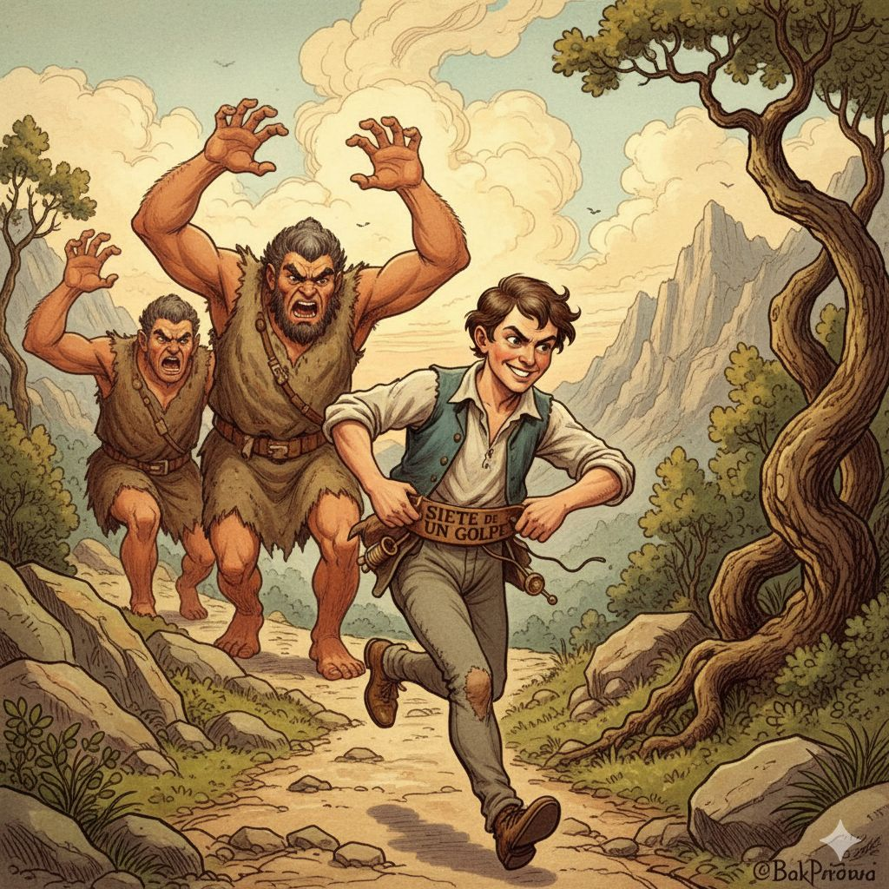

Proceso de la aventura
Nuestro proceso comenzó armando un flujo de la historia, donde definimos cómo iban a ser las pantallas y qué opciones tendría la aventura gráfica. Una vez que eso estuvo bien establecido, empezamos a crear los prompts para generar las imágenes: qué estilo tendrían y cómo debía verse cada escena. Con los prompts listos, utilizamos la IA de Google Gemini y fuimos generando las imágenes. Por suerte, todas salieron bastante parecidas entre sí, manteniendo coherencia visual. Cuando ya teníamos todas las imágenes, comenzamos la parte de programación en Processing/p5.js. No tuvimos problemas con el código y aprobamos la primera instancia. Durante todo el proceso nos comunicamos mucho por llamadas de Discord, donde definimos el estilo visual: dibujos con estética de cuento y colores claros. También trabajamos el flujo de la historia, creando cada pantalla, su texto y las opciones/aventuras que tendrá el usuario al interactuar con la aplicación.

integrantes del equipo
Somos Milagros Pocholo y Chiara Scuderi de la comision 5 .